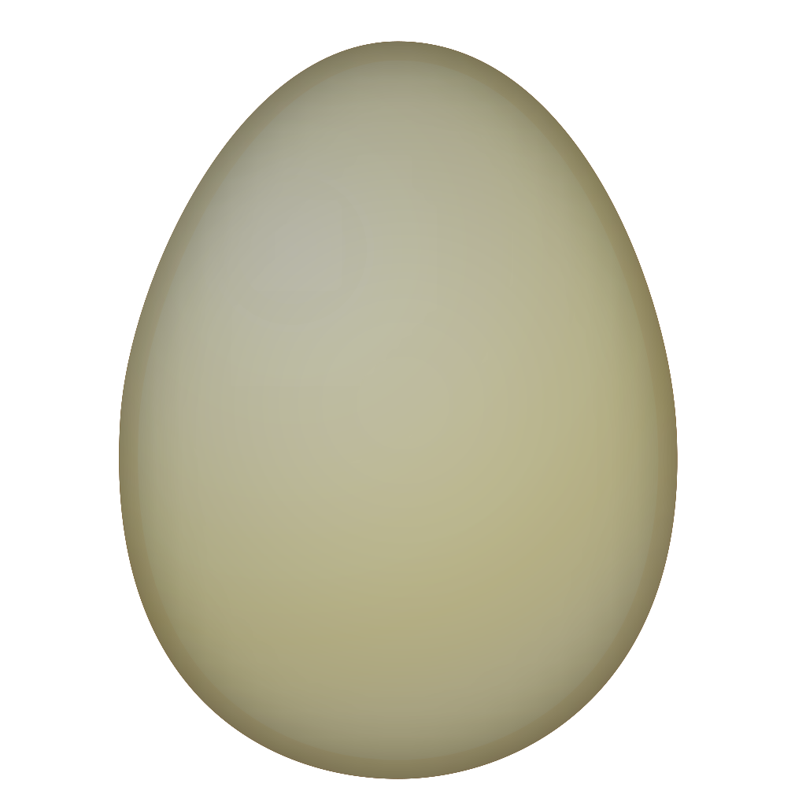
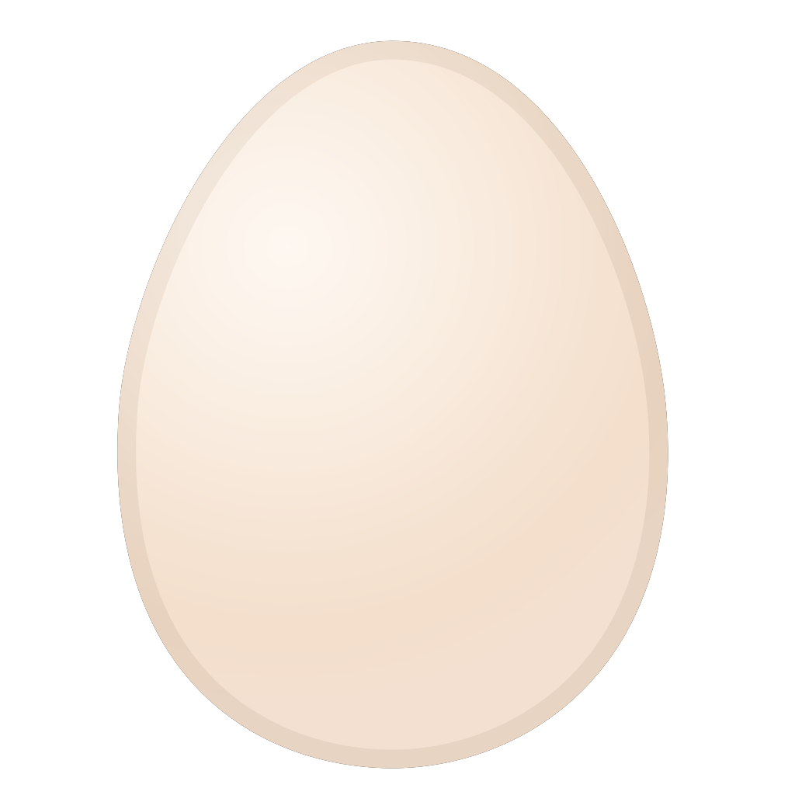

Valkyrie
Val, Val-pal, Valley Girl, Aunty Val
Val is our oldest girl in the flock (hence the "Aunty" moniker). While she may be slowing down in her age, she's still got a lot of pep, and isn't afraid to push to the front of the line to get what she wants!
Large cream with vertical wrinkles

Cherry
Cher-Bear, Cherrypie, Cherry Berry, Creaky Door, Our Little Pine Cone
Cherry is the smallest in our flock but don't let her size fool you. This girl packs a punch of attitude. She's not afraid to get right in the thick of it or to tell you exactly what she thinks with her croaky voice. She's pretty sure she's the boss and no one can tell her what to do.
Extra small cream, often with harmless calcium deposits

Wasabi
Wasabi Babi, Sabi Babi, Wabi-sabi, Babi Girl, Bobert, Boberta
Babi is far and away the cuddliest chicken we have ever met. When everyone else is getting riled up, Babi runs to us. If you pat your knee, she will hop right up and she adores scritches. If you ever thought chickens couldn't be affectionate, you've clearly never met Babi!
Medium brown egg, often with speckles
Blueberry
Bloob, Bloobers, Blooby-booby
Bloob was the first of our second group of chickens to lay an egg! She's definitely our most outgoing and friendly girl. She's the first to say hi to anyone who enters her line of sight and will jump into right your lap to do so. Heck, sometimes she can't even wait for you to sit and will go straight to your shoulder instead!
Large medium brown with occassional white speckles
Strawberry
Strob, Shortcake, Shorty, Strobbers
Strob is a sweet and reserved girl. She may not be the first to run up at the sight of newcomers or treats, but she's a good pal to all our other hens! Rarely is she ever on her own, as we often spot her acting as a pillow for her friends. And as a big, fluffy girl, she plays the part quite well.
Large medium brown with occassional white speckles
Mango
Mango-Tango
Who ever said Rhode Island Reds were bossy and flighty hasn't met a girl like our Mango! Chill and curious with a splash of cautious, it may take her a bit to come close, but she's certainly not opposed to being held for a cuddle. Just maybe make it quick!
Extra large red-brown, sometimes with speckles

Clementine
Clem
Oh our darling Clementine! Whoever said Rhode Island Reds were flighty may have met Clem! While not one for being held, she'll still circle in close if you've got a tasty bribe. Clem is a versatile flock socialite who can hang with the big bosses just as much as she chills with the calmer crew.
Extra large red-brown, sometimes with speckles

Walnut
Wally, Walbert, Wally Girl, Waldorf, Little Miss Emu
Clearly Wally's body grew faster than her motor skills. She's got the longest legs and neck we've ever seen on a chicken! However, she never let her towering stature get to her ego. A little chaotic, a whole lot sweet, Wally marches to the beat of her own drum. Wally is our first hen to have chicks, and she is an excellent, doting mother.
lowLong sage green
Cashew
Cash, Cash-money, Goofy, Goofy Goblin, Goblin Girl
Cash is a chicken that can make you laugh. She gives the goofiest looks! She's an expressive girl, especially when it comes to dust baths. We never knew chickens could purr until we witnessed Cash revel in a pile of dust.
Medium oblong mint-blue

Pickles
Pickoos, Princess Pickles
Pickles was our shiest chicken, counter to usual for her breed. She grew up more slowly than the other girls and learned to take a cautious approach. Now that she's grown up, she's determined to be near the top of the pecking order. She's also really good at chasing down flying bugs!
Large light brown

Graham
Golden Graham, Goldie, Gold's Gym, Mr. Ma'am
When Goldie arrived to us, he was marked as a pullet (a female chick). We knew within three days he was a roo just by his rambunctious nature. He sure has grown into a handsome guy who loves to woo the ladies with a little song and dance. He puts on a big show sometimes, but that doesn't mean he won't tolerate a chin scratch every now and again.
Large medium brown genes

Gertrude
Gertie, Gerdy-Birdy
Gertie is a classy lady who waits for her treats, sleeps in the window at night and dazzles us with her "pearl earrings" (she has irredescent ear lobes!). When she's not trading places with her twin, Maude, she can be found enjoying a nap in the shade. She's one of Wally's babies.
Long sage green

Maude
Maudy-Baudy
Maude, contrary to her refined twin, is a ravenous bird! Careful if you come in the coop with treats, she's bold enough to peck them right out of your hands (and run away with the whole dang bag)! She's definitely near the top of the pecking order, but don't let her assertiveness fool you into thinking she's not a friendly girl. She's another of Wally's babies.
Long sage green with speckles

Dottie
Dottie-baby, Big-booty-Judy
Dottie is a calm and curious hen. She's one of our biggest girls, so not much scares her. Upon every new happening, she quietly approaches and will calmly investigate, looking you up and down (until she learns you have no treats, then she saunters off)! She's one of Wally's babies.
Large light brown 

Dolly
Dolly, Miss Parton
Dottie got her name well before she was a grown hen, but boy, did she grow into it! On top of being a bodacious girl, she's sweet, and kind to her flock mates, and doesn't mind being around us humans either. She's one of Wally's babies.
Large light brown
Pip
Pipperino, Pipperoni, Little Miss Pip, Pippy Longstockings
Pip got her name after she spent the first week of her life inside, healing a leg injury she got on her very first day. While she made a full recovery, she sat on the desk peeping up a storm, repeating "Pip pip pip pip" all day and night until she was finally reunited with her sisters. She's grown into a sweet hen who will be underfoot when treats are involved, and refuses to share her dust bath. She's one of Wally's babies too!
Medium brown with occassional speckles

Rita
Rita-bo-Bita, Ritz
Rita enjoys long walks around the run with her twin sister, racing the other hens out of the coop in the morning, and scratching every moment of the day away. She's one of Wally's babies.
Large very light brown
Sophie
Soph
Sophie loves to race her twin sister out of the coop in the morning. We swear they swap places all the time - it's so hard to tell them apart! Both of them are sweet hens that get along with just about anyone. She's one of Wally's babies.
Large very light brown
Allons-y
Al, Alanso
On mother's day while outside gardening we heard a crow get closer and closer. On investigating, there was a beautiful rooster walking up the path! He hung around for a month or so before we decided to make him part of the homestead. We got him some hens, and built a coop. He's even fathered a few chicks!
Large medium brown and speckled genes

C'est La Vie
LaVie, Lovely
LaVie is the ruling hen under Allonsy's roof. She is assertive, yet fair and keeps a level head. She hatched a few chicks herself after co-brooding with her flock mates. Sometimes, though, she sounds like a car that can't start!
Small white eggs
Que Sera, Sera
Sarah
Sera is LaVie's second in command. She seems to have a lot more anxiety than her level headed friend, and you can hear her squawks from a mile away. What she lacks for in a calm demeanor though, she makes up for in tenacity! Sera also brooded over the clutch.
Small white eggs

Je nais se quoi
Jenny, Blind Jenny, Jenny from the Block, Jen-jen
Poor Jenny's had a rough go of things. She was quite ill when we took her in, and while we were able to cure the infection, it ended up claiming one of her eyes. While she can be easily spooked due to her limited vision, it hasn't stopped her from hatching eggs or digging for treats! She's looking much better these days, and we love our little Jen-Jen the Hen-Hen!
Small white eggs
Kernel
Kerns
Kernel is one of Allonsy's chicks, hatched by the flock of game hens (LaVie, Sera, and Jenny). He's the spitting image of his father, maybe a bit smaller. He's quiet and sweet, and loves to watch from a distance. He might be a little standoffish, but he'll come running when he hears the treat can open!
Large medium brown and speckled genes
Trooper
Koopa Troopa, Troop-troop
Kernel's brother, and son to Al and the game hens, he's a good mix of all the genes. He looks just like dad but his diminuitive stature, and adventurous nature clearly comes from his moms! Every evening he insists on sleeping in a tree, and every morning he inadvertently locks himself in the garden and has to be let out. He's very sweet and would love nothing more than to follow you around to see what your up to. He even comes when called!
Large medium brown and speckled genes